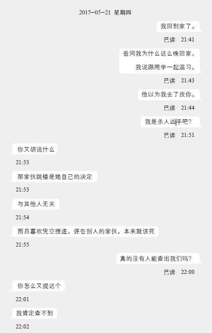
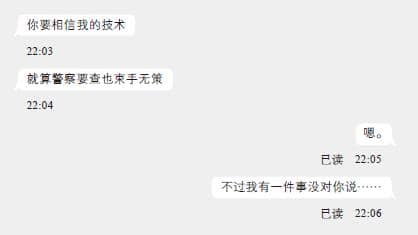

第二章
1
阿怡站在西营盘第二街一栋六层高的唐楼外，瞧着门牌，一脸困惑。
“151号……是这儿吧？”
阿怡重复看着名片上那个手写的地址，以及唐楼大门旁那个油漆褪色到几乎看不到的阿拉伯数字。在她面前的唐楼似乎有七十年以上的历史，灰色的外墙因为年久失修显得破破落落，也令人怀疑它本来是白色的，只是被灰尘和废气熏成这种丑陋的灰黑色。二楼屋檐的边缘水泥剥落，露出锈迹斑斑的钢筋，叫人担心站在它下方会被掉落的碎片砸伤。大楼门口没有钢闸，也没有信箱，就是一个长方形的出入口，里面只有一道往上延伸的楼梯，通往阴暗的二楼。大楼没有名字，门口只有一个写着“151”的门牌，而那个“5”字的下半部已差不多消失了。
与莫侦探会面翌日的早上11点，阿怡依照名片的地址，来到港岛西环这栋大楼前。她本来以为自己会找到一栋商业大厦，到她离开西营盘地铁站、走进第二街，看到一栋栋陈旧的楼房，她才赫然想到莫侦探给自己的地址不可能是外表光鲜的商业楼宇——因为对方说过，这个“阿涅”是“无牌侦探”，那自然不可能光明正大地在商业大厦开业。
问题是，眼前的楼房跟想象中相差太多太多了。
阿怡觉得，这栋唐楼根本不像是有人居住的。破落的外表不是令她这样想的原因，而是这建筑物散发出一股废屋的气息。阿怡抬头一看，除了顶楼外，各层的窗户都紧紧闭上，另外也看不到窗口有装冷气机。在151号大楼对面有另一栋外墙泥黄色的五层高唐楼，只要拿它做比较，便很容易看出相异之处——黄色唐楼各层都有安装不同大小、不同牌子的冷气机，窗框也各有不同，三楼和五楼的窗外更安装了晾晒架，上面挂着大大小小的T恤、裤子和被单。151号就像被弃置多年，会被游民、不良少年、吸毒者或幽灵据为己用的房子。它跟一般废屋的分别只有窗子玻璃没破，以及门口没有以木板封掉。
“这唐楼要拆掉重建吧？”阿怡心想。
她环视四周，想知道自己是不是弄错了地址。第二街是一条微斜的街道，位于西营盘的旧区，虽然街道东西两端尽头有一些簇新的高楼大厦，但151号所在的位置附近，都是一些颇具历史的旧楼，而且街上的店子很少，跟相隔两条街、热闹人多的皇后大道西大相径庭。151号两旁和对面的十余个店面之中，除了一家纸品行和两家五金行外，其余店子都拉下了闸，不知道那些是空置的店面还是店主休息不开门。街上也人烟稀少，马路很窄，只容许双线单程行驶，可是目前有一辆黑色的厢型车停在阿怡身旁数米外，挡住了其中一线。阿怡开始担心莫侦探不小心写错了地址给她，或许是门牌号码弄错，也许是街名写错——毕竟跟第二街平行的两条街道分别叫第一街和第三街，多写一笔或少写一笔，这种无心之失倒很常见。
正当阿怡踌躇着该走进面前的昏暗梯间，还是到第一街和第三街瞧瞧151号是什么样子时，响亮的脚步声引起她的注意。在那道阴沉的151号楼梯上，有一个妇人正缓步走下来。
“不、不好意思，请问这是第二街151号吗？”阿怡见机不可失，趁着妇人走出门口时，趋前问道。
“是啊。”身穿深色服装、看外表五十余岁的妇人回答。妇人上下打量着阿怡，而阿怡这时候才留意到对方提着一个红色胶桶，里面放着一些清洁剂、手套和打扫工具。
“请问你是住客吗？我想问一下，六楼是不是……”
“你要找阿涅吗？”
妇人的话，令阿怡确认名片上的地址没错。
“六楼，没错，”妇人凑过头瞄了阿怡手上的名片一眼，友善地笑了笑，“这栋楼每层只有一个单位，你走上去便会看到，不会找错啦。”
阿怡向妇人道谢后，对方便往水街的方向离开。阿怡瞧着阴暗的楼梯间，心想既然那住客——或是钟点女佣——认识阿涅，那准没错。阿怡怀着忐忑的心情，一步一步往上走，一方面她不知道这个阿涅能不能帮助她，另一方面，梯间的环境和光线也令她颇不安，每次走到转角，她都仿佛觉得会有可怕的东西忽然跳出来吓她一跳。
缓缓地走完五层楼梯，阿怡来到六楼。正如妇人所说，这栋唐楼每层只有一户，六楼楼梯旁就只有一扇白色的木门，门外有一道钢闸。从外表看来，这门没有什么特别，就是平凡的、随处可见的唐楼住宅单位大门。木门和钢闸上没有贴任何东西，既没有“侦探事务所”的招牌，也没有写着“出入平安”的红纸或门神的画像。门旁有一个黑色的门铃按钮，样子很古老，就像是上世纪六七十年代一直用到今天似的。
阿怡确认了墙上写着“六楼”两个字，然后伸手按下门铃。
“哒哒哒哒哒……”是很古老的门铃声。
等了十数秒，门后没有动静。
“哒哒哒哒哒……”阿怡再按。
再等了半分钟，大门还是紧闭。
不在吗？阿怡心想。然而她隐约听到门后传来窸窸窣窣的声音，感觉上室内有人。
“哒哒哒哒哒哒哒哒哒哒……”阿怡按住门铃不放，那串扰人的门铃声就像机关枪似的，一声声打在鼓膜上。
“够了！”钢闸后的白色木门突然被打开一线，半张脸孔在门缝露出来。
“您、您好！我是——”
“砰”的一声，大门再次关上。
阿怡一脸错愕。门后再次陷入沉默，于是阿怡再次按下那发出噪音的按钮。
“我说够了！”门再次被打开，这次那面孔稍微多露了一点。
“涅先生！请等一下！”阿怡嚷道。
“不用‘请’，我今天不见客！”对方边说边关门。
“我是莫侦探介绍来的！”眼看木门快要关上，阿怡情急之下吐出这一句。
“莫侦探”这三个字似乎有点效果，对方的动作止住，再缓缓地拉开木门。阿怡从口袋掏出名片，隔着钢闸递给对方。
“该死的。莫大毛那混蛋又丢什么鸟事给我啊……”接过名片后，门后那人打开了钢闸，让阿怡走进屋内。
踏进房子里，阿怡才清楚看到这家伙的外表，而这是继目睹151号大楼外观后，她今天所受的第二个冲击。这男人看样子约四十岁，个头不高，身形也不壮硕，就是很平凡的普通人身材，甚至可以说有点瘦。他顶着一头像鸟巢般的乱发，刘海盖过眼眉，发尖垂在一双无神的眼睛前方，跟那个尚算高挺的鼻子构成一种微妙的违和感。他的嘴唇上下和下巴满布胡碴，加上他身上那件沾满污迹、皱巴巴的灰色T恤，以及那条裤管边缘脱线的蓝白色格子七分裤，活脱脱一副草根阶层的形象。阿怡在屋邨长大，见过不少这种外表不修边幅的街坊，她记得陈大婶的老公以前就是这模样，每天陈大婶叉着腰骂老公没出息，陈大叔却只自顾自地喝啤酒。
阿怡将视线从对方身上移开后，屋子里的环境教她再次暗吃一惊。她脑海只浮现两个字：“狗窝”。
大门旁堆着一堆堆杂物，有报纸杂志、衣服鞋袜，还有大大小小的瓦楞纸箱。经过玄关后，大厅一样杂乱无章，跟玄关正对着的墙前放了两个大书架，书架上歪歪斜斜地塞满书本，书架前方的圆桌上则放着三个鞋盒大小的木箱子，里面塞满电线、电路板和阿怡没见过的电子零件。桌子旁的每张椅子上也放置了东西，其中一张的座位上堆叠了十数片光碟，另一张更夸张，座位上放的是一个上下颠倒、外壳发黄的旧式电脑屏幕。
在大厅左方的角落有一张办公桌，案头同样是一片狼藉，纸张、文具、书本、喝光了的啤酒罐、几个麦果营养棒的包装袋、两台笔记本电脑，芜杂地散落在桌上各处。办公桌前有两张相对的墨绿色沙发，上面分别搁着一支电吉他和一个粉红色的行李箱，而沙发之间有一张小茶几，这大概是房子里唯一一件表面没放杂物的家具。办公桌右方有一个组合柜，上面有一套看来有点年纪的音响，架子的空隙都塞满CD、黑胶唱片和卡式录音带，而最下方的一格放了一个电吉他音箱，电线像毛线球般打结，整整一大团搁在地上。柜子右面有一棵高约一米的观叶植物，植物后面的墙上有一扇偌大的窗户，虽然损蚀的百叶窗帘放下了一半，猛烈的阳光仍能从窗口照进室内。在阳光映照下，阿怡看到室内很多家具和摆设上都沾满灰尘，窗前的地板上还有一摊摊污迹。
——一个住在这种狗窝里、蓬头垢面的男人会是名侦探？
阿怡差点想将心里的话宣之于口。
“请、请问您是涅先生吗？我……”
“你先坐着，我刚睡醒。”男人答非所问，打了个呵欠，光着脚往玄关旁的洗手间走过去。阿怡回头张望一下，找不到可以坐的位置，只好直愣愣地站在沙发旁。
洗手间传来冲厕声和盥洗声，阿怡稍稍探头，发现洗手间门没关，不禁转身瞄向房子的另一边。书架旁边有一扇门，门没有关上，阿怡看到门后是卧室，里面有一张被褥凌乱的睡床，床边一样填满混乱的箱子、衣物和塑胶袋。整个环境让阿怡觉得很不自在，虽然她没有洁癖，但这房子差不多可以跟那些“垃圾屋”一较长短，只是因为唐楼的楼层高度较高，所以感觉上还有些许活动空间，降低了窒息感。
而另一个令阿怡觉得不自在的理由，正从洗手间走出来。
“你呆站着干什么？”那邋遢的男人一边搔着腋下一边向阿怡说，“我不是叫你坐着等我吗？”
“请问您是涅先生吗？”阿怡想确认对方的身份——事实上，阿怡期望对方否认，并跟她说“那位厉害的侦探刚好不在，我只是他的室友”。
“叫我‘阿涅’，我很讨厌什么‘先生’。”阿涅扬了扬阿怡之前给他的名片，“莫大毛不是如此写着吗？”
阿涅捡起沙发上的吉他，放到一旁，再一屁股坐在沙发上。他瞧了瞧阿怡，用眼神示意叫她把行李箱移开。阿怡只好照指示做，她抓住行李箱的手把一拉，才发觉箱子很轻，里面应该是空的。
“莫大毛叫你找我，有什么事？给你五分钟说明。”阿涅整个人软瘫在沙发上，摆出一副漫不经心的态度，再打了个呵欠。
看到对方傲慢的样子，阿怡几乎想掉头而去，离开这个令她倒胃的狗窝。可是她的理智成功压下她的情绪。
“我、我姓区，我想委托您替我找一个人。”
阿怡简略地说明了事件——包括小雯在地铁被猥亵，被告上庭后改口认罪，申冤文章在花生讨论区出现，网民霸凌，记者追访，然后就是小雯自杀。
“我委托了莫侦探调查，想找出邵德平的外甥，让我跟他当面对质……可是莫侦探调查后，发现邵德平根本没有姐妹，这个外甥并不存在。”阿怡从手袋掏出莫侦探给她的报告书，递给阿涅。阿涅接过后瞄了几眼，再翻了几页，然后将文件丢在茶几上。
“以莫大毛的资质，查到这儿已是极限吧，嘿。”阿涅以嘲弄的语气说道。
“莫侦探说他没有技术单凭讨论区一篇帖文找出作者，所以他叫我找您。”阿怡其实对阿涅轻视莫侦探的态度很反感，毕竟莫侦探是愿意向她伸出援手的好人，不过一想到莫侦探对阿涅的能力赞誉有加，不禁猜想阿涅可能给过莫侦探很多帮助。
“这样的委托我不接。”阿涅斩钉截铁地说。
阿怡怔了一怔，紧张地说：“为什么？我连愿意付多少钱都未说……”
“太简单，所以不接。”阿涅站起身子，摆出送客的姿态。
“太简单？”阿怡不可置信地瞪着阿涅。
“简单，很简单，超简单。”阿涅表情毫无变化，淡然地说：“我对无聊的案子没兴趣。我好歹干的是‘侦探’，不是‘技术员’，只要按既定程序便能完成，不用思考的低级委托，我从来不接。我的时间很宝贵，可不会浪费在这种垃圾案件上。”
“垃、垃圾案件？”阿怡感到被侮辱，只能讶异地重复对方的刻薄评语。
“对，垃圾，无聊、没意义的垃圾。这种事情每天都发生，人人也因为一点鸡毛蒜皮的小事想挖出躲在网路某角落的人来报复，假如我连这种水平的委托也接受，我就比电话公司的客服更不如。莫大毛肯定又感情用事，我明明说过别将狗屎垃圾丢过来，我可不是他的清道夫……”
阿涅这番话，令一直克制着的阿怡终于爆发：“你、你根本是做不到，所以才借故推搪吧？”
“嘿，想用激将法吗？”阿涅没被阿怡惹怒，反而露出笑容，“这类案子就是简单到我闭上眼也能完成啊。我告诉你吧，所有讨论区服务器都有IP记录，我只要几分钟，便能打开花生讨论区的后台，抽出那个档案。然后把目标IP地址丢进资料库，反向搜查出ISP，再从ISP的登入记录筛选出用户端的实际地点。你以为警察调查那些在网路散布言论、号召非法集会事件很困难吗？根本是易如反掌。警方能做到的，我就没可能做不到。”
阿怡对什么“服务器”“用户端”全不理解，但阿涅的从容，让她感觉到对方说的是实话。然而，这番话令阿怡更火大，既然如此简单，替她找出kidkit727只是举手之劳，偏偏阿涅却拒绝委托。
“这么简单的话，那我委托其他人吧！”阿怡也站起来，不甘示弱。
“区小姐，你弄错了。”阿涅嚣张地说，“这件事‘对我来说’很简单，不见得对其他人而言一样简单。依我看，在香港能黑进花生讨论区服务器的黑客大约有二百人，但能完全不留痕迹、不会暴露行踪的，只有不到十个。我先祝你好运，找到那十个人之中其中一位帮你——啊，不对，是九人之中的一位，毕竟我已拒绝你了。”
阿怡这时候才察觉，阿涅是坊间所谓的“黑客”，是那些躲在网路阴暗处，仅靠移动指头便可以攫夺天文数字般的金钱，以及窃取公众人物隐私用作威胁勒赎的电子罪犯。
这个认知令阿怡内心一抖，对面前这个不起眼的男人心生畏惧，可是她一转念，发觉对方正是帮助自己的最佳人选。为了不让小雯死得不明不白，阿怡按捺住脾气，硬着头皮再次提出请求。
“涅先……阿涅，请您替我查一下，我实在无计可施，您拒绝的话，我不知道该上哪儿找帮助了。”阿怡低声下气地说，“您要我下跪或干什么，我也愿意，我受不了小雯被一个不明人物害死……”
“好。”阿涅突然拍了一下手掌。
“好？”
“五分钟已过。”阿涅走到办公桌后，将挂在椅背的红色运动外套穿上，“请你离开，我要外出吃早餐。”
“可是……”
“你不走，我便报警说有神经病擅闯民居。”阿涅站在玄关，穿上一双凉鞋，打开了大门和钢闸，下巴朝门外努了努。
阿怡没办法，只好捡起茶几上的文件，塞进手袋离开房子。她不知所措地站在梯间，但阿涅带上门，完全无视身后的阿怡，沿着楼梯往下走。
看着阿涅的背影，阿怡内心的那股无力感再次浮现。在这道昏暗的唐楼阶梯上，阿怡每往下走一级，心情就往下沉一分。纵使莫侦探说过阿涅不一定接受委托，她没想过被对方拒绝之余，还要遭到这种无礼的对待。阿怡有种无论自己如何挣扎、终究逃不出上天预设的命运的感觉，阿涅的羞辱，不过是上天对自己的一种警告，叫自己别妄想反抗。
房屋署主任那句“逆来顺受”再次在她的耳边响起。
从阴暗的梯间步出大街，刺眼的阳光教阿怡从抑郁中觉醒。当她把手放在额前遮挡光线时，一阵急促的脚步声从左方传来。
“你们——唔！”
就在阿怡眼前，阿涅忽然被两个男人抓住。那两个男人一高一矮，高个子相貌较年长，身材健硕，两条手臂比阿怡的大腿还要粗壮，其中左边手腕上面文着一条龙，一看便知道不是善类。矮个子外表虽然不及文身汉那么吓人，但那一头左右削薄的金发和紧身T恤，不难令人联想到他是混黑道的古惑仔。
文身汉从后擒抱着阿涅，再用右手臂勒住他的脖子，压住气管往后拖行，令他无法大声呼救。金发男则往阿涅腹部打了两拳后，跑回停在路旁的黑色厢型车旁，扶着车门让文身汉拖阿涅上车。
目睹这突如其来的一幕，阿怡反应不过来，脑袋一片混乱。然而她没有机会细想。
“D哥，那女的好像跟这家伙一起的？”金发男望向阿怡。
“一并抓走！”
听到文身汉的吆喝，阿怡来不及逃跑，便被一个箭步冲前的金发男抓住手腕。
“放开我！”阿怡大叫。
金发男一手捂住阿怡的嘴巴，再用力把她揪住，往厢型车的方向摔过去。阿怡差点绊倒，只是金发男没有放手，直接将阿怡推上车。
“开车！”金发男一关上车门，文身汉便大叫道。
阿怡跌进车里时，理解到目前的处境——文身汉和金发男九成是向阿涅寻仇的黑道，而自己则是“连带损害”，是被殃及的池鱼。她拼命反抗，但金发男用手按住她的肩膀，又用膝盖压着她的大腿，教她动弹不得。她跟金发男对上眼，看到对方目露凶光，一副要揍她的样子，更吓得魂不附体。
对了！还有阿涅——阿怡猛然想起身旁还有阿涅。阿怡想，既然阿涅是莫侦探推荐的人物，应该遇过不少这种场合，他一定身手不凡，就像李·恰尔德笔下的杰克·雷切尔 [1] 一样，能拯救自己逃出生天。阿怡回头望向阿涅，期待看到他跟文身汉扭打在一起——
“咳……”
阿涅坐在座位上，身体前倾抱着腹部，辛苦地干吐着。车厢里两排座位面对面并排着，文身汉坐在阿涅正前方，跟阿怡一样露出惊讶的神色。纵使他们不知道，他们不约而同地想着同一句话：“你这家伙未免太逊了吧？”
“咳……妈的，下手真重……”阿涅吐着不知道是胃液还是口水的液体，再往后挨在座椅上，脸色苍白。文身汉和仍箝住阿怡的金发男面面相觑，不懂得如何应对。一般来说，这时候被掳的人应该在挣扎，而他们便要用拳头甚至动刀动枪威吓对方。
“……你就是阿涅吧？我们老大老虎哥要见你。”就像索尽枯肠也找不到合用的狠话，文身汉只好板起脸孔，如此说道。
阿涅没回应，只是缓缓伸手进外套左边的口袋。文身汉见状立即冲前按压住阿涅的左手，骂道：“你别轻举妄动，我——”
“不用紧张，我不碰就是。”阿涅举起双手，一副投降的样子，“你自己拿吧。”
“什么？”文身汉不明白阿涅在说什么。
“咳……口袋里的东西，麻烦你自己拿一拿。”阿涅指了指他的外套左边口袋。
“嘿，想收买我吗？”文身汉不怀好意地笑了笑。他记起了偶尔遇上的情况——有些目标人物会用钱求他放人一马。他才没有这么笨，毕竟事情传到老大耳中，自己便吃不完兜着走。
文身汉伸手插进阿涅的口袋，抽出一个白色信封。他本来以为是钞票，可是信封薄薄的，里面顶多只有一两张纸。他把信封反过来，在看到信封正面的时候，他脸色大变，就像白天看到幽灵一样。
“这、这是什么！”文身汉嚷道。
“D哥，怎么了？”金发男紧张地问，压制着阿怡的力度减了几分。
“我问你！这是什么！”文身汉没理会金发男，揪住阿涅领口，焦躁地问。
“咳，就是给你的信啊。”阿涅干咳了一声，淡然地说。
“我不是说这个！你为什么知道我的名字！”文身汉再把阿涅的衣领揪紧一点。
阿怡这时瞥见文身汉手中的信封，信封面用蓝色原子笔写着“吴广达”。
“你打开便知道了。”阿涅回答道。
文身汉将阿涅推回座位，紧张地撕开信封。信封里掉出一张照片，阿怡和金发男看不到内容，但他们都看到文身汉的脸色一下子发白，眼睛睁得老大。
“你——”
“你别乱来。”阿涅的话刹停了再次想冲前的文身汉，“我手上有这照片，自然代表我有所准备，就算你现在把我埋进水泥丢入后海湾，我在外面的伙伴们会替我办事，那照片一样会曝光。”
“D哥，发生什么事？”金发男放开阿怡，趋前向文身汉问道。
“没有！什么都没有！”文身汉紧张地将信封和照片塞进裤袋。
金发男一脸狐疑，反复瞅住阿涅和他的前辈。
“你也有。”阿涅从另一边口袋掏出另一个信封，递给金发男。阿怡这回看得清楚，信封上写着“黄子兴”三个字。
“你——你为什么知道我的——”金发男也一样，看到信封上有自己的名字时一脸错愕。他接过信封，打开看到里面后，脸上的血液倒流，内心发毛。阿怡伸长脖子，看到信封里也是一张照片，照片的主角正是金发男，他挨在一张棕色的沙发上，双目紧闭，右手手边有一个啤酒罐，似乎睡得正熟。
“你这混蛋！”金发男丢下阿怡不管，在狭小的车厢中用手臂架着阿涅的脖子，喝道，“你为什么能走进我家！这照片你什么时候拍的！你不说我便杀死你！”
文身汉从后拉住金发男，令阿怡傻眼。她不知道为什么那壮汉竟然反过来帮阿涅解围。
“咳咳……现在的小鬼真冲动，开口闭口便打呀杀呀，”阿涅摸着发红的颈项，说，“黄子兴……还是你想我叫你的绰号‘黑仔兴’？没关系吧。你别管我什么时候走进你那个像猪栏的住所，趁你熟睡时站在你面前替你拍照，你该担心的是我可以在你全不知情、毫无防备的时候接近你，那么你有没有想过你每天喝的啤酒是不是普通的啤酒？吃的泡面是不是普通的泡面？你藏在厕所水箱的‘货’，会不会被换成普通的止痛药？”
“你！”金发男仍想冲上前掐住阿涅。
“我真的动手的话，你有九条命也不够死。”阿涅突然换上一副疯子般的神情，凑近金发男的脸，直视着对方双眼，“我可以趁你熟睡时挖掉你的双眼、割掉你的肾脏，亦可以在你的饮用水里放弓形虫，让它们寄生在你那人头猪脑里，慢慢把你的脑袋吃掉。你别以为替老大扫过几个场子便代表自己很有种，要比狠比疯的话，你远不及我。你可以在这儿干掉我，但我保证你往后会生、不、如、死。”
在这一刻阿怡才察觉，车厢里形势逆转了。本来被武力压制的阿涅，在短短几分钟之内反过来变成威胁者。文身汉和金发男的眼神流露出恐惧，仿佛现实中出现他们无法理解、无法控制的异常事物。
“还有，开车姓余的那个！”阿涅向着车头嚷道，“给我回去屈地街，在来记面家外面停车！你不照做的话，我可不保证五分钟后荃湾明育幼稚园会不会发生什么离奇的意外——”
厢型车急促刹车，阿怡几乎摔在地上。
“你、你——你敢动我女儿半条头发……”厢型车司机转过头，紧绷着脸，怒气冲冲地说。
“我怎么不敢？”阿涅回复木然的表情，说，“姓余的，你有正当职业不干，跑去替这些人渣当车手赚外快，惹祸累及妻女是你活该的。你聪明一点的便立即掉头，迟个一秒钟的话，我爱莫能助。”
车子此时停在上环干诺道西信德中心附近的路边，姓余的司机焦灼地盯着文身汉，文身汉说：“照他的话做。”
不到五分钟，厢型车回到西营盘，在屈地街附近停下。在这短短的车程里，阿怡感到车厢里弥漫着一股迷离的气氛，令她无法了解这个诡异的处境。她本来该是被牵连的局外人，是半个被害者，但她又觉得自己好像站在加害者的一方。文身汉和金发男一直没说话，只以畏惧不安的眼神盯着阿涅，仿佛只要一把视线移开，阿涅——和阿怡——便会变成张牙舞爪的魔物，把他们吞噬。
“这个，拿去。”刚下车，阿涅从裤袋掏出第三个信封，递给车上的文身汉。
“这是？”文身汉有点犹豫，不知道该不该接。
“给你们老大的。”阿涅说，“你们今天交不了差吧？把这个拿回去，给张永承那厮，他便不会怪你们，你们之后也不用来麻烦我。”
文身汉半信半疑地接过信封，可是阿涅没放手。
“不过我奉劝你们别看内容。”阿涅嘴角微微上扬，“好奇心的代价可以很大，你们犯不着拿自己的贱命作赌注。”
文身汉和金发男愣住。阿涅放开信封，不管他们，将车门关上，再拍了车身两下，示意司机开车。
眼看着车子远去，阿怡仍未清楚刚才发生什么事。
“涅、涅先生……”阿怡开口想问，却不知道从何问起。
“你还伫在这儿干啥？我就说我不接你的委托，请你另找高明啦！”阿涅皱了皱眉，一脸嫌恶。他的态度令阿怡有种错觉，刚才的事不过是一场梦，他们只是搭便车从第二街来到屈地街而已。
“不，我、我想问，刚才发生了什么事？”想起被硬推上车的一刻，阿怡犹有余悸。
“你是猪头吗？那还不明显？就是黑道来找碴啊。”阿涅轻描淡写地说。
“为什么他们要对付你？你对他们干了什么？”
“没干什么，只是某个吃了亏的笨蛋奸商找黑道出头罢了。‘老虎哥’张永承是湾仔黑道的新头目，刚接任不久，做事不知分寸……”
“那为什么他们会放过我们？”阿怡打断阿涅的话，问道。
“任何人都有弱点，只要抓住对方的弱点，便任由摆布。”阿涅耸耸肩。
“什么弱点？你给那个文身男人的照片是什么？”
“他搭上了老大的老婆，那是床照。”
阿怡惊讶地盯着对方。
“你怎拿到的？”阿怡顿了一顿，想到另一个更奇怪的点，“不，他们都对自己的名字被写在信封上感到惊讶，你是预先知道他们要来抓你的吗？”
“当然了，黑道做这种事情，一定会先部署，就像侦探跟踪调查一样，这叫‘踩线’。他们在我家附近盯梢了一整个星期，我再笨也不会不察觉。”
“那你怎知道他们的名字？甚至查出他们的背景、潜入他们家中拍照？他们不是随处可见的古惑仔吗？”
“小姐，我十五分钟前不是说过吗？”阿涅冷笑一下，“要锁定、查出一个人的背景，对我来说易如反掌，不过是雕虫小技。其余是商业机密，我才不要告诉你。”
“既然你掌握了他们的弱点，为什么还要被他们押上车，不一开始便拿出来威吓他们？”阿怡想起自己被金发男推上车时仍心有余悸。
“先给对方一点甜头，让他们以为自己拥有主导权，还击时便更得心应手，能制造更大的伤害。你没听过‘欲擒故纵’吗？”
“可是——”
“小姐，你烦不烦啊？我要说的到此为止，会面结束，谢谢指教，一路顺风。”阿涅摆摆手，转身走进旁边一家面店。
“嗨！阿涅！怎么一整个礼拜不见你啦！”貌似老板的人向阿涅嚷道。
“最近忙嘛。”阿涅笑道。
“照旧吗？”
“不啦，老板，刚才吃了两拳，有点反胃。来一碗净云吞就好。”
“呵，哪个笨蛋有眼不识泰山居然杠上你了……”
阿怡站在店外，看到阿涅和面店老板谈笑风生，跟之前在车上露出狡诈凶悍的表情判若两人。面店的店面很小，座位不到十个，而且正值午饭时间，坐满客人，阿怡不知道该不该跟着进去。犹豫了一会儿，阿怡理解到继续苦缠只会自讨没趣，于是沿着屈地街，往地铁站的方向离开。
然而她刚坐上列车便后悔了。
他一定能替我找出害死小雯的人——这个想法，在阿怡脑海中挥之不去。尤其看到阿涅轻而易举地摆脱危机，比那些黑道早一步布好整个局，神乎其技地挖出素未谋面的陌生人的隐私，那么，找出kidkit727并且知道他的动机一定不难。
阿怡知道，她一天找不出真相，一天心里就有一根刺。
而且，她觉得自己有责任去找出这个真相。
2
往后一个星期，阿怡每天都往西营盘跑。因为上下班时间不定，有时她上班前特意先到西区一趟，有时就在下班后到访。阿怡再次上门找阿涅时，按了很久门铃也没有回应，她不知道对方是不是刚好外出，但第三次拜访，她就肯定阿涅是特意拒见，请她吃闭门羹。6月8号星期一黄昏，阿怡走上那道昏暗的楼梯，在六楼的钢闸外按了多次门铃后，室内传出吵闹的音乐声。她愈大力拍门，喇叭的音量便愈大，可想而知阿涅是要用音乐声盖过阿怡的骚扰。阿怡站在门外等了三十分钟，同一首英文摇滚乐曲便重复播足半个钟头。到阿怡放弃离开，走到街上时，耳朵仍充满着急促的鼓声和不断重复的歌词。她猜阿涅有心嘲弄她，因为那句歌词是“You can't always get what you want”——“你不会永远得到你想要的”。
阿怡担心她每次找阿涅，对方也会制造噪音或用其他方法赶她走，迟早引起楼下的住客注意，她便可能被当成骚扰者，不晓得会不会惹上警察。为了避免这事发生，她只好待在街上，企图趁阿涅外出或回家时拦截对方，再尽力说服他接受委托。可是阿怡在第二街守候多时，始终没遇过阿涅。她每天等待时都会抬头望向六楼的窗户，但无论白天或晚上、窗子打开或关上、室内开了灯还是关了灯，她都从来没见过阿涅靠近窗边。
即使每天耗上两三个小时，阿怡也没有打算放弃。她深信总有一天会逮到阿涅，虽然见面后如何说服他，她毫无头绪。
6月12号黄昏，阿怡下班后直接赶到第二街，继续她的“守株待兔”。这天下着滂沱大雨，阿怡的裤管全湿掉，但她仍撑着伞，一边站在路边灯柱下大口咬着从麦当劳买来充当晚餐的汉堡包，一边盯着151号的门口。就在她盘算着这晚该不该冒雨通宵等待——因为她翌日放假——的时候，她的手机响了。她狼狈地从手袋掏出那支用了差不多十年的旧式Nokia手机，发现没有来电号码显示。
“喂？”
“请你别在我家附近晃来晃去，好碍眼。”
阿怡定了定神，才发觉手机传来的是阿涅的声音。
“涅、涅先生？为什么你有我的号码？”阿怡讶异地问。
“就说是商业机密。”
“涅先生，请你听我说，”阿怡决定不管自己的号码怎么曝光，只想到机不可失，要趁这个对话机会请求对方调查，“我求求你，你开什么条件我也应承，我只想请你给我一个名字而已……涅先生，我这辈子只有这个请求，请你……”
“你别那么多废话，我可以接受委托。”
“涅先生，请你再三考虑，我——咦？”阿怡突然发觉，阿涅的回复跟她想象的不一样，“你刚才说……接受委托？”
“你给我上来，就看你付不付得起钱。”阿涅说罢便挂了线。
阿怡既惊且喜，三口并成两口把汉堡包吞掉，再一口气跑上六楼。她还没按门铃，阿涅便打开大门让她进去。阿涅的外表跟之前没两样，一样是不修边幅，只是脸上的胡碴少了点，阿怡想他可能刮过。
“涅先生——”
“‘阿涅’。”阿涅一边关上门，一边不快地说。他的语气就像老板命令下属似的。
“是，是。”阿怡觉得自己卑躬屈膝，但为求目的，这点自尊可以放弃。“阿涅，你愿意接受委托，替我找出那个kidkit727吗？”
“就看你能不能付我开的价钱。”阿涅走到办公桌后，坐在椅子上。
“多少？”阿怡紧张地问。她将湿漉漉的雨伞搁在玄关门旁，跟着阿涅来到桌子前。
“不多，八万二千六百二十九元五角。”
阿怡听到这个价码，愣了一愣。八万多找一个人固然很贵，但她又想，假如阿涅是要她知难而退，大可以开一百万、一千万，那她一定付不出来。
可是，为什么阿涅开的数目这么零碎？
就在阿怡对此感到不解时，一个画面在她脑海闪过。
“八万二千六百二十九元五角，不就是……”阿怡结结巴巴地说。
“对，就是你的账户里的全部财产。”
阿怡想起，今天早上在ATM提款时看过结余，数字正是82,629.5。
“你……你怎……”阿怡欲言又止。她很清楚，阿涅一定是用某种方法黑进她的银行账户，看过她的户口结余，这一刻她有种自己赤身露体，被面前这个粗鄙的男人看光光的错觉。
她也同时理解，金发男和文身汉在信封上看到自己的名字时有什么感觉了。
“那你付不付？”阿涅挨在椅背上。
“付！”阿怡没半点犹豫。阿怡心想，难得阿涅回心转意，不抓住这黄金机会，天晓得对方之后会不会反口拒绝。
阿涅露出笑容，伸出右手：“好，握手为凭。我干的不是什么正当生意，别奢望我跟你签什么合同。”
阿怡踏前一步跟阿涅握手。虽然阿涅身材单薄，手劲却不弱，阿怡觉得手上传来一股力度，令她觉得对方一定能找出害死小雯的始作俑者。
“我不收头款，你必须先付全数，我才开始工作。”阿涅再说道。
“无问题。”阿怡爽快地回答。
“而且我只收现金。”
“现金？”
“对，一是你付我比特币。”阿涅边说边示意阿怡坐在办公桌前的一张椅子上，“但我猜你根本不懂什么是比特币吧？”
阿怡点点头。她从新闻听过名字，可是她完全搞不懂那是什么。
“现金是要连零钱也准备好吗？”阿怡问。
“对。少一毛钱我也不接受。”
“明白了。”阿怡点点头，“不过……”
“不过什么？有不满便拉倒。”
“不，我只是想知道为什么你会改变主意。”
“区小姐，你知道我为什么开这个价码吗？”阿涅反问道。
阿怡摇摇头。
“因为我想确认你是不是真的把这件委托当成最重要的事，”阿涅说，“你没半分迟疑。我过去遇过很多委托人，我一提出要他们全部财产，他们便打退堂鼓。连自己都没有执念，却想要我这个外人卖命侦查，这不是很混账吗？”
“所以……你这几天其实是在试探我？”阿怡问。
“嘿，我最好是这样的一个好心人啦！”阿涅冷笑了一下，“我肯接受委托，是因为我发现你的案子比我想象中有意思。只是假如你没有半点觉悟，重视金钱多于案件，那再有意思我也不会帮你。”
“有意思？”阿怡不明所以。
“有意思。如果只是我上次说过那种用常规手段便能找到目标的无趣案子，我打死不接，你在街上等到腐烂发酵长蘑菇我都不管。”阿涅拨开案头上一个“金龟唛”带壳花生的包装袋和两个啤酒罐，打开了一台笔记本电脑，把屏幕转向阿怡。画面上显示着的，正是花生讨论区里那篇帖子的版面。
“这是当天花生讨论区的登入资料，上面记录了各用户的登入地址。”阿涅点开另一个视窗，上面有一排排密密麻麻的文字，是一个试算表文件。
“你……你已经替我查过了？”阿怡有点意外。
“小姐，你弄清楚，我不是‘替你’查过，而是我百无聊赖，好管闲事地去瞄一眼，”阿涅以嘲讽的语气说，“即使我查到对方的名字、年纪、住址、职业或祖宗十八代是谁，我也无意告诉你。”
阿怡心里骂了一句，可是她没有发作，毕竟她知道阿涅是能够替她找出kidkit727的人，心想姑且忍一忍。
“这个便是kidkit727的IP。”阿涅指着一串数字——“212.117.180.21”。
“IP是什么？”
阿涅以看到珍禽异兽的眼神瞧着阿怡。
“你不知道什么是IP地址？”
“我不懂电脑。”
“原始人。”阿涅不屑地啐了一声，再说，“IP地址全名Internet Protocol Address，中文是网际协议地址，简单来说，就是你进入网路时用来辨认机器位置的编号。就像你到银行或医院会先领号码牌，当你连接上网路，网路服务商便会委派一个独一无二的号码给你，你在网上浏览网站、打电动、跟他人聊天，都是由这号码来辨识。”
“讨论区也要用？”
“我就说，‘进入网路时便会获得这号码’，要在讨论区留言，讨论区的服务器——呃，讨论区的‘机器’也会记下留言者的IP地址。只要有IP地址，便能逆向追查到留言者的电脑在哪儿。这你明白了没有？”
阿怡紧张地点点头：“所以你已知道kidkit727发文章的实际地址了？”阿涅苦笑了一下：“知道，在卢森堡中部城镇施泰因瑟尔。”
“欧洲？”阿怡吃了一惊，“kidkit727不在香港？”
“不，那家伙耍了点小手段，”阿涅指着屏幕上那串IP地址，“这个地址是一个Relay。”
“Relay？”
“中文大概译作‘中继站’吧。要在网路上隐瞒自己的身份，有很多方法，其中最简单而有效的，便是使用中继站。用户先连上外国的电脑，再经那台电脑连到目标网站，于是目标网站只会记下外国电脑的地址，不知道那台外国电脑会将讯息再传一次，回去真正的用户机器上。”
“那我们不是只要在卢森堡那台电脑上找出当天的使用记录，便能知道kidkit727的真正IP地址吗？”
阿涅扬起一边眉毛：“看来你也不太笨。你说得对，理论上可以这样做，但实际上做不到。”
“为什么？”
“因为我肯定这家伙用了不止一个中继站。卢森堡这个IP，老早在我的资料库中有记录，是一般黑客常用的中继站之一，而这个中继站属于Tor Network……中文叫‘洋葱路由网’。”
“‘洋葱’？”
“名字由来涉及网路原理，详情我便不提了，总之这是一个庞大的匿名网路。不少人使用它纯粹为了浏览‘暗网’，亦即是那些提供地下资讯如色情或贩卖毒品的网站，但实际上，Tor的研发原点是为了让用家在网路上隐藏行踪。想使用Tor来浏览网站，最方便的方法是使用一款叫‘洋葱浏览器’的自由软件，它能自动在全球数千个中继站里跳跃，所以即使我黑进卢森堡的电信商，拿到当天的记录，仔细比对那个IP在该时段的每一段通信，我应该会发现使用者的位置在美国、法国或巴西之类，同样的调查要再重复数次，经过多重中继站才有可能找出用家的真正位置。然而只要当中有一个中继站没留下记录，我们便没有线索继续追踪下去，相比之下，‘大海捞针’还较容易一点。”
阿怡听到这比喻，不由得感到泄气。
“既然IP调查碰壁，我便尝试找其他线索。kidkit727在帖文当天才注册花生讨论区，”阿涅指着屏幕上某一行，“使用的电邮信箱是rat10934@yandex.com. yandex.com是俄罗斯一家提供免费信箱的网路公司，申请不需要用手机短信验证，我肯定这也是那家伙随意登记的免洗电邮地址。”
阿涅将食指横移，沿着kidkit727的一行扫往右手边，停在其中一栏上面。
“更可圈可点的是，这个kidkit727还很小心地抹去另一笔资料。用户浏览网站，浏览器会提供一串透露了用户机器特征的文字给对方，这串文字叫‘User Agent’，它会让对方的电脑知道你用的是微软视窗还是苹果麦金塔、是手机还是平板，甚至连浏览器和作业系统的更新版本号码都知道，例如Windows NT 6.1就是微软视窗七的代号，OPiOS便代表了这是苹果iOS上的Opera浏览器。可是花生讨论区记录下来的，kidkit727的User Agent只有一个字。”
阿怡看到，画面上在HTTP_USER_AGENT一栏里，有很多很长很复杂的英文字和数字，夹杂着Mozilla/5.0，AppleWebKit，Chrome之类的词汇，但kidkit727的一行中，那一格只写着“X”。
“X？”
“从来没有这么短的User Agent的，这是用户人手输入的文字。有些浏览器可以让用家改变这串文字，伪装成其他平台或浏览器，洋葱是其中一款。”
“可是，你说洋葱是‘其中一款’，他也可能使用其他浏览器？或者他没有使用‘多重中继站’的技术，只是用了‘一重’呢？”
“区小姐，你还没明白啊。”阿涅倚在椅背上，十指互扣放在案头，“无论他是不是使用洋葱，他很明显做了一件事——他刻意消除自己的脚印。这个kidkit727是在发文当天才注册成为花生讨论区的用户，他只登入了一次，发了一篇文，之后再没有活动记录，而他登入和发文时，居然使用了中继站的技术，连自己使用哪种浏览器、什么平台电脑的资料也预先抹去，几近完美地隐瞒自己的身份。假如他发文的目的是为了替邵德平申冤，为什么要花这些多余工夫？他这样做，根本就是在说‘我深知这文章会引起轩然大波，甚至会引人追查我的身份，但我不想曝光’。”
阿怡这时候终于追上阿涅的想法，不由得愣住。
“写这文章的人，是有心制造事端，而且他更有IT背景，懂得多少电脑技术。”阿涅说，“现在唯一的问题是，到底这个神秘人是真心想替邵德平洗白，还是想引发网路霸凌，借事件迫害你妹妹？”


[1] Jack Reacher，由英国惊悚小说家李·恰尔德（Lee Child，1954— ）塑造的硬汉侦探形象。